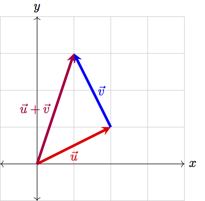
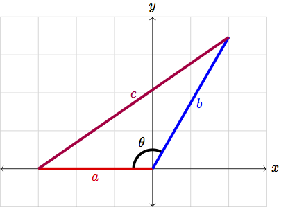
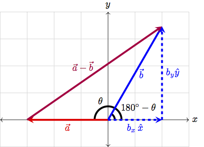
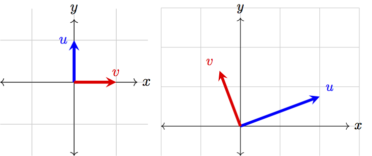

Fundamentals of Linear Algebra¶
This section provides a review of fundamental linear algebra concepts that we will find ourselves encountering again and again. In particular, we will look at what vectors and how we can represent vectors in NumPy. We will explore what operations we can perform on vectors, both in linear algebra and in Python. We will learn how matrices and matrix multiplication can be used to more conveniently work with vectors. Lastly, we will explore geometric interpretations of these concepts to build intuitive interpretations of vector operations.
What is a Vector?¶
In its simplest form, a vector is a quantity that posses both a direction and a magnitude. You may have heard this definition before, but what does it actually mean? Let’s start by considering a few examples. If I were to say that I am running at \(10\) mph, heading west, then I have described my movement (my velocity, to be more precise) as a vector whose magnitude is \(10\) mph and whose associated direction is westward. We can also visualize a vector as below.

From the picture above, we see that the vector has a direction: the vector begins at the origin and points to the point \((3,4)\) on the \(x\)-\(y\) plane. We also see that the vector has a clear magnitude: if we so wanted, we could grab our rulers and measure the exact length of the vector. Broadly speaking, these are the only two notions we need to describe any given vector.
It is common to root vectors at the origin, and this is what we will do from now with all our vectors. Choosing to have vectors start at the origin means that all the information we need to completely describe a vector is contained in the endpoint of the vector. This will allow us to write vectors as rows or columns of numbers. In our previous example, we could write the vector as \begin{equation} \vec{u}=\begin{bmatrix}3 \\ 4\end{bmatrix}\;\;\text{or}\;\;\vec{u}=\begin{bmatrix}3 & 4\end{bmatrix}. \end{equation}
Notice the arrow on \(\vec{u}\). This arrow simply helps us distinguish vectors from other mathematical objects; it tells us that we can perform special vector-only operations on \(\vec{u}\) that wouldn’t make sense for other objects. Often times we contrast vectors with scalars. Scalars are the numbers we are used to working with, which we of course never write with an arrow.
In general, a vector is a unique specification of a point in space. For example, for any point \((x,y)\) in two-dimensional space, we can write the vector \begin{equation} \vec{u}=\begin{bmatrix}x \\ y\end{bmatrix}\;\;\text{or}\;\;\vec{u}=\begin{bmatrix}x & y\end{bmatrix}. \end{equation}
In three-dimensional space, we would need three values – \(x\), \(y\), and \(z\) – to specify our location in space. Thus, a three-dimensional vector is given by \begin{equation} \vec{u}=\begin{bmatrix}x \\ y \\ z\end{bmatrix}\;\;\text{or}\;\;\vec{u}=\begin{bmatrix}x & y & z\end{bmatrix}. \end{equation}
This brings us now to the idea of the dimensionality of a vector space.
Definition:
The dimensionality of a vector space is the number of coordinates needed to uniquely specify a point in space. When we write vectors as rows or columns of numbers, the dimensionality of the vector is the number of elements that we write. That is, the dimensionality of a vector is the number of elements in the vector.
In two-dimensional space, we need two distinct values – \(x\) and \(y\) – to localize ourselves. In 12-D space, we need a distinct coordinate for each of the \(12\) dimensions. Thus, a \(12\)-dimensional vector will have \(12\) components (elements). In general, if we are in \(N\)-dimensions, we need to \(N\) values to specify a point in that space.
Vectors in NumPy¶
We can represent vectors in NumPy with ndarrays. For example, our original vector \(\vec{u}=\begin{bmatrix}3 & 4\end{bmatrix}\) can be represented in NumPy as
np.array([3, 4])
This brings us to an extremely important distinction between our terminology and NumPy’s.
Important Note:
The dimensionality of the vector is *not* the same as the dimensionality of a NumPy array. The dimensionality of a vector is the number of elements in the vector, while the dimensionality of an array is the number of indices needed to retrieve a single element.
The 1-D array np.array([3, 4]) represents a 2-D vector. Similarly, the arrays
np.array([1.2])
np.array([3, 4])
np.array([-9.1, 4.0, 5.0])
are all 1-D NumPy arrays, as they each only require \(1\) integer-index to uniquely specify an element in the array. However, the arrays represent 1-D, 2-D, and 3-D vectors, respectively.
All NumPy arrays with a single row of numbers are considered 1-dimensional arrays in NumPy-lingo. The size (i.e. the number of elements) of that 1-dimensional array corresponds the dimensionality of the vector it represents.
The concepts of vector and array dimensionality are not completely disjoint, however. In fact, if we think of a \(N\)-D vector as an arrow pointing to specific location in \(N\)-D space, then an \(N\)-D NumPy array can be thought of as that \(N\)-D space itself. For example, the 2-D NumPy array
np.array([[0, 1, 2],
[3, 4, 5],
[6, 7, 8]])
requires two indices to retrieve a specific value, and hence we need two distinct values to localize ourselves in the matrix. This is exactly the same as how a two-dimensional vector has two values that localize a point in 2-D space! Similarly, in a 3-D array, you need three indices to specify your position in the array, just as a three-dimensional vector uses three values to specify its position in 3-D space.
Takeaway:
A \(N\)-dimensional vector is a unique specification of a point in \(N\)-D space, and thus requires exactly \(N\) distinct elements. A \(N\)-D NumPy array can be thought of as \(N\)-D space itself, as it requires \(N\) distinct indices to specify an element in the array.
Operations on Vectors¶
Since vectors are very different objects to the scalars we are used to working with, we need to define the operations that we can perform on vectors.
Addition and Subtraction¶
First, we will define vector addition and subtraction element-wise; that is, \(\vec{u}+\vec{v}\) is given by
Subtraction is defined identically:
Using our vectors-as-arrows representation of vectors, we can visualize the addition \(\vec{u}+\vec{v}\) as placing \(\vec{v}\) at the end of \(\vec{u}\), then drawing a vector from the origin to the tip of \(\vec{v}\). Consider the vectors \(\vec{u}=\begin{bmatrix}2 & 1\end{bmatrix}\) and \(\vec{v}=\begin{bmatrix}-1 & 2\end{bmatrix}\), the sum of which can be visualized as:

While this doesn’t quite follow our convention of having vectors rooted at the origin, it is convenient to visualize vector addition in this way. To visualize subtraction, think of flipping \(\vec{v}\) to point in the opposite direction and adding this flipped vector to \(\vec{u}\):

This vector addition and subtraction is exactly how NumPy implements addition and subtraction between arrays. For instance, if we have the two vectors \(\vec{u}=\begin{bmatrix}-2 & 5\end{bmatrix}\) and \(\vec{v}=\begin{bmatrix}4 & 0\end{bmatrix}\), we can find the sum and difference of the vectors in Python as
>>> np.array([-2, 5]) + np.array([4, 0])
array([2, 5])
>>> np.array([-2, 5]) - np.array([4, 0])
array([-6, 5])
It is important to note, however, that while a Python expression such as
>>> np.array([1]) + np.array([4, 0, -7])
array([5, 1, -6])
is valid due to NumPy’s broadcasting rules, this is not a valid vector operation. Vector addition and subtraction must be between two vectors of the same dimensionality.
This begs the question, from these definitions of addition and subtraction, could we extrapolate a definition for multiplication and division between vectors? The answer is no. In linear algebra, element-wise multiplication and division are not standard operations, and we usually don’t need to consider them. However, NumPy will allow us to compute such elements-wise products and quotients, with * and /, if we so wished:
>>> np.array([-2, 5]) * np.array([4, 0])
array([-8, 0])
>>> np.array([-2, 5]) / np.array([4, 0.5])
array([-0.5, 10.])
Scalar Multiplication¶
While we don’t consider element-wise multiplication and division between vectors, we do often multiply scalars and vectors. For a vector \(\vec{u}\) and scalar \(k\), scalar multiplication is defined as
That is, we multiply each element of \(\vec{u}\) by the scalar \(k\). In NumPy, we can do this by simply multiplying a vector with a number:
>>> 2 * np.array([7, -3, 0, 0.5])
array([14., -6., 0., 1.])
Since we are multiplying each element in \(\vec{u}\) by the same \(k\), we are actually scaling – changing the length of – the vector \(\vec{u}\) by a factor of \(k\). This is visualized below.

Notice also that multiplying by a negative scalar actually reverses the direction of a vector, in addition to scaling it.
The Norm¶
This brings us to the operation responsible for finding the magnitude (length) of a vector: the norm. We denote the norm of a vector by \(\lVert\vec{u}\rVert\) and define it as
The norm is simply a generalization of the Pythagorean theorem; in fact, in two dimensions, the norm of a vector simply recovers the Pythagorean theorem:
Furthermore, we see that scalar multiplication does indeed scale the length of our vector:
When we have a vector whose magnitude is \(1\), we call it a “unit vector” or a “normalized vector”. We denote unit vectors by with a “hat”, such as \(\hat{u}\), so that we can make explicit when a vector is known to have a length of one. In 2-D, we often write \(\hat{x}=\begin{bmatrix}1 & 0\end{bmatrix}\) for the unit vector that points along the \(x\)-axis, and \(\hat{y}=\begin{bmatrix}0 & 1\end{bmatrix}\) for the unit vector along the \(y\)-axis.
We can decompose any vector into the sum of unit vectors. A two-dimensional vector, for example, can be written as
We can also convert any arbitrary vector into a unit vector by normalizing that vector. That is, for a vector \(\vec{u}\), we will multiply by the scalar \(\frac{1}{\lVert\vec{u}\rVert}\), thus scaling our vector to have length \(1\).
Takeaway:
In linear algebra, we can define:
element-wise addition and subtraction between vectors of the same dimensionality
multiplication of a scalar and a vector
In NumPy, we can additionally:
perform element-wise multiplication and division between vectors of the same dimensionality
add and subtract scalars and vectors
These operations are not standard operations in linear algebra.
We can also find the magnitude of a vector with the norm operation, and convert arbitrary vectors to unit vectors by dividing the vector by the norm.
Reading Comprehension: Norm of a Sum
Using the definition of the norm, compute \(\lVert\vec{a}+\vec{b}\rVert\), where \(\vec{a}\) and \(\vec{b}\) are both \(N\)-dimensional vectors. Simplify your answer to be in terms of the norm of \(\vec{a}\), the norm of \(\vec{b}\), and a sum.
Reading Comprehension: Normalization
Write a Python function named normalize. It should take in one argument v, which is a 1-D NumPy array. The function should use vectorized operations to compute the norm of the vector and should return the normalized v vector.
Normalize the vector \(\begin{bmatrix}3 & -290 & 1.234 & -8529 & 0.00001\end{bmatrix}\). Use the function numpy.linalg.norm to confirm that the vector returned by your function does indeed have magnitude \(1\).
The Dot Product¶
We will find in our study of machine learning that it is of critical importance that we can quantify how similar two vectors are – to measure how much they overlap with one another. This is the role of the dot product. However, in order to have a good geometrical intuition for the dot product, we need to very briefly review some trigonometry.
The Law of Cosines¶
Here we will recall the law of cosines, a generalization of the beloved Pythagorean theorem \(a^2+b^2=c^2\). Say we have a non-right triangle, as shown below.

Observe that we can treat the sides of this triangle as 2-D vectors:

We can now break \(\vec{b}\) into it’s \(x\) and \(y\) components (i.e. write \(\vec{b}=b_x\hat{x}+b_y\hat{y}\)). In our picture, this can be visualized as

Now we have a right triangle, and so we can apply the Pythagorean theorem! In particular, we see that
Furthermore, from our diagram, we can see that, in terms of \(\theta\), \(b_x\) is given by
We thus find the law of cosines as
That’s enough trig for the rest of ever, so let’s get back into linear algebra.
The Dot Product, For Real Now¶
A special operation that we can define between two vectors is the dot product.
Definition
The dot product is denoted by \(\cdot\) and is defined as
This means that we find the element-wise product of the two vectors (by multiplying the corresponding elements in each vector together), then sum the resultant values. As an example, take vectors \(\vec{u}=\begin{bmatrix}2 & 9\end{bmatrix}\) and \(\vec{v}=\begin{bmatrix}7 & 4\end{bmatrix}\). Then we can compute the dot product as:
When we compute the dot product, we need to ensure that our vectors are of equal dimensionality. After all, if one vector has more elements than the other, how are we supposed to compute an element-wise product!
There are some useful properties of the dot product that we should discuss. First, the result of a dot product will always be a scalar, never a vector. Furthermore, the dot product is commutative, which is just fancy math speak for saying \(\vec{u}\cdot\vec{v}=\vec{v}\cdot\vec{u}\).
We should also notice that the dot product is linear (in fact, almost everything we do in linear algebra will be linear). This means two things:
First, we can multiply by a scalar value either before or after we perform the dot product, i.e. \(\vec{u}\cdot(k\vec{v})=k(\vec{u}\cdot\vec{v})\),
Second, we can distribute the dot product over addition and subtraction, i.e. \(\vec{u}\cdot(\vec{v}+\vec{w})=\vec{u}\cdot\vec{v}+\vec{u}\cdot\vec{w}\).
The first of these is straightforward to see from the definition
The second may not be quite as clear, but when we expand the dot product in terms of the definition,
These properties can be extremely useful when working with expressions involving the dot product! Finally, we should observe that we can conveniently define the norm of a vector in terms of the dot product
Reading Comprehension: Cauchy-Schwarz
By definition, we know that the norm of a vector is greater than or equal to 0. Using the connection between the norm and the dot product, and the fact that
show that \((\vec{a}\cdot\vec{b})^2\leq\lVert\vec{a}\rVert^2\lVert\vec{b}\rVert^2\). Note that
is simply a scalar value.
Reading Comprehension: Dot Product
Write a function named dot_prod that takes in two 1-D NumPy arrays a and b of the same size and returns the dot product of the two arrays by applying vectorized operations.
Use your function to find the dot product of the vectors \(\vec{a}=\begin{bmatrix}8 & -4 & 1 & 3 & 0\end{bmatrix}\) and \(\vec{b}=\begin{bmatrix}0.25 & -2 & -11 & 7 & 9\end{bmatrix}\). Validate one of the previously discussed properties of the dot product by computing \(\vec{a}\cdot(\vec{b}+\vec{c})\) and \(\vec{a}\cdot\vec{b}+\vec{a}\cdot\vec{c}\), where \(\vec{c}=\begin{bmatrix}3 & -5 & 2.3 & 0 & 8\end{bmatrix}\).
At this point, we’ve built up all the tooling we need to look at the geometric consequences of the dot product. But what kind of geometrical meaning could the dot product even have? What’s with all this hullabaloo?
To answer these questions: the dot product provides us with a way of measuring the overlap between two vectors. How do we see this? Well, let’s consider taking the dot product of \(\vec{a}-\vec{b}\) with itself. We know that we can distribute the dot product, and thus
However, we also know that we can write the norm in terms of the dot product, and so the previous expression can be written as
But this is almost exactly the law of cosines, as we saw earlier! In fact, we can simply read off
where \(\theta\) was the angle between the vectors \(\vec{a}\) and \(\vec{b}\). This is fantastic! We see that the dot product is proportional to the angle between two vectors, and thus can tell us how much the vectors overlap!
Let’s take a look at a few extreme cases to build an intuition of this. First, when two vectors are parallel and thus overlap completely, the angle between them will be \(0\). As a simple example, consider the vectors illustrated below:

When two vectors are parallel, their dot product is simply the product of their magnitudes, as \(\cos(0)=1\). In the case that both vectors are normalized, this value will be \(1\). When \(\theta=0\) also happens to be when cosine achieves its maximum, and so when two vectors are parallel, their dot product will be maximized.
When two vectors are anti-parallel, they face in opposite directions:

In this case, the angle between the two vectors is \(180^\circ\). However, when \(\theta=180^\circ\), cosine is at its minimum value of \(-1\). Thus, when two vectors are anti-parallel, their dot product will be minimized. When two normalized vectors are anti-parallel, their dot product will be \(-1\).
Lastly, consider two perpendicular vectors:

When two vectors are perpendicular to one another, they do not overlap at all. This also means that \(\theta=90^\circ\), and consequently \(\cos(\theta)=0\). Thus, the dot product of the two perpendicular vectors will always be \(0\).
In general, if we have two vectors \(\vec{u}\) and \(\vec{v}\), then if \(0^\circ<\theta<90^\circ\), we have \(\vec{u}\cdot\vec{v}>0\). Meanwhile, if \(90^\circ<\theta<180^\circ\), then \(\vec{u}\cdot\vec{v}<0\). We can intuitively see why this might be the case by looking at two diagrams:

When \(\theta<90^\circ\), then the “shadow” of \(\vec{u}\) lies directly on \(\vec{v}\). Meanwhile, when \(\theta>90^\circ\), if we wanted the “shadow” of \(\vec{u}\) to lie on top of \(\vec{v}\), we would need to flip \(\vec{v}\) into \(-\vec{v}\):

While we work in 2-D here to develop an intuition, notice that the definition of the dot product applies for \(N\)-D vectors. While we may not be able to visualize the angle between two 12-D vectors, we could still use the dot product to compare these vectors! If the dot product is close to \(1\), the vectors are very similar, whereas if the dot product is close to \(0\), the vectors are very dissimilar.
Takeaway:
The dot product is a measure of how much two vectors overlap. In particular, the dot product is related to the angle between two vectors by the formula \begin{equation} \vec{a}\cdot\vec{b}=\lVert\vec{a}\rVert\lVert\vec{b}\rVert\cos\theta. \end{equation}
Now that we’ve quite thoroughly discussed the dot product, how can we code it up? Sure, we could implement a for-loop sum, but that would be awfully slow to run. Thankfully, because of how important the dot product is, NumPy has an optimized function numpy.dot (often pronounced np-dot-dot) that we can use. When passed in two 1-D arrays of the same size, np.dot will compute the dot product. For example,
>>> a = np.array([3, 7, -4, 10])
>>> b = np.array([0, -1, 6, 0.5])
>>> np.dot(a, b)
-26.0
We can also use the @ operator to compute the dot product:
>>> a = np.array([3, 7, -4, 10])
>>> b = np.array([0, -1, 6, 0.5])
>>> a @ b
-26.0
Note: the @ operator actually calls the function numpy.matmul, which we will discuss later. As seen here, it will also compute the dot product between two 1-D NumPy arrays.
Reading Comprehension: Angles Between Vectors
Write a Python function named angle that takes in two 1-D NumPy arrays a and b of the same size and returns the angle between the two vectors. Use the NumPy functions np.dot, np.linalg.norm, and np.arccos.
Use your function to find the angle between the following pairs of vectors:
\(\begin{bmatrix}3 & \sqrt{27}\end{bmatrix}\) and \(\begin{bmatrix}-3 & \sqrt{3}\end{bmatrix}\)
\(\begin{bmatrix}1+\sqrt{3} & \sqrt{3}-1\end{bmatrix}\) and \(\begin{bmatrix}0 & -\frac{1}{2}\end{bmatrix}\)
\(\begin{bmatrix}4 & 4 & 4 & 4\end{bmatrix}\) and \(\begin{bmatrix}-\sqrt{3} & 1 & 0 & \sqrt{2}\end{bmatrix}\)
Note: np.arccos will return a value in radians. You can use np.degrees to convert this value into degrees if you wish.
Matrices: Collections of Vectors¶
Matrices can be interpreted in a number of ways, but it will be extremely convenient for us to think of a matrix as a collection of vectors of the same dimensionality. If we have \(M\) vectors, each of dimension \(N\), we could then pack the vectors into a matrix.
We can have each column of our matrix be a separate vector:
Here \(W\) is a \((N,M)\) matrix, because it has \(N\) rows and \(M\) columns. We could alternatively construct a matrix where each row is a distinct vector:
Here \(V\) is a \((M,N)\) matrix. In either case, our matrix is simply a collection of vectors. In Python, we can represent a matrix as a 2-D NumPy array.
With matrices, we can define the matrix multiplication operation.
Definition:
Consider the two matrices \(V\) and \(W\), which have shapes \((M,N)\) and \((N,L)\), respectively. We will think of \(V\) as having \(M\) vectors of dimension \(N\) (with each vector as a row) and \(W\) as having \(L\) vectors of dimension \(N\) (with each vector as a column). Performing matrix multiplication will yield a \((M,L)\) matrix, where element \(i,j\) is equal to:
This formula bears a striking resemblance to the dot product we defined earlier. In fact, by performing a matrix multiplication, we are actually performing repeated dot products. The dot product between the \(i^\text{th}\) row of \(V\) and \(j^\text{th}\) column of \(W\) is computed, then filled into element \(i,j\) of our output matrix:
It is very important to note that the shapes of the matrices do matter.
Important Note:
We can matrix multiply our \((M,N)\) and \((N,L)\) matrices only because the inner dimensions are both \(N\). You cannot compute the matrix product of two matrices \(V\) and \(W\) unless the number of columns in \(V\) equals the number of rows in \(W\). This is simply because the dot product requires we have two vectors of the same dimensionality.
There are a few other properties of matrix multiplication that are useful to note:
If \(VW\) can be computed, then \(WV\) cannot be computed unless \(V\) and \(W\) have transposed shapes (i.e. \(V\) has a shape \((N,M)\) and \(W\) has a shape \((M,N)\)). Even in this case, \(VW\) is generally not equal to \(WV\).
You can multiply a \((M,N)\) matrix with a \((N,1)\) matrix (i.e. a column vector), to produce a \((M,1)\) vector. Similarly a \((1,M)\) matrix (or a row vector) can be multiplied with a \((M,N)\) matrix to yield a \((1,N)\) matrix.
Reading Comprehension: Matrix Multiplication
Write a function named matmul that returns the matrix multiplication of two arrays. It should take in two 2-D NumPy arrays A and B, with shapes (N,M) and (M,L). Instantiate an empty array of the correct shape using numpy.empty, and populate the entries in the array with the appropriate values of the matrix multiplication of A and B. Use np.dot to compute each entry in the output array. Confirm that
Because matrix multiplication is simply repeated dot products, each value we compute actually represents an angle between vectors. Thus, the matrix we get when multiplying matrices \(V\) and \(W\) of shapes \((M,N)\) and \((N,L)\) is actually a matrix full of \(M\times L\) angles, where element \(i,j\) tells us the similarity between row \(i\) of matrix \(V\) and column \(j\) of matrix \(W\).
The matmul function that NumPy provides will perform matrix multiplication on two arrays:
>>> A = np.array([[-4, 2, 0], [1, 0.5, 3]]) # (2,3)
>>> B = np.array([[-1, 4, 2, -6], [3, -1, 8, -13], [0.5, 2, 5, 1]]) # (3,4)
>>> np.matmul(A, B) # (2,3) x (3,4) -> (2,4)
array([[10., -18. , 8. , -2. ],
[ 2., 9.5, 21. , -9.5]])
Note that np.matmul also follows the rules outlined for matrix multiplication, throwing an error if our inner dimensions are not aligned:
>>> np.matmul(B, A) # (3,4) x (2,3)
ValueError: matmul: Input operand 1 has a mismatch in its core dimension 0, with gufunc signature (n?,k),(k,m?)->(n?,m?) (size 2 is different from 4)
As we see from the traceback, np.matmul complains that the inner dimensions do not have the same size: size 2 is different from 4. Lastly, as mentioned earlier, we can use the @ operator to perform matrix multiplication:
>>> A @ B
array([[10., -18. , 8. , -2. ],
[ 2., 9.5, 21. , -9.5]])
In fact, under the hood all the @ operator does is call np.matmul!
Links to Official Documentation and Other Resources¶
NumPy Docs: dot function
NumPy Docs: matmul function
Python Like You Mean It: broadcasting
Python Like You Mean It: vectorized operations
Reading Comprehension Exercise Solutions¶
Norm of a Sum: Solution
Applying the definition of the norm,
Normalization: Solution
def normalize(v):
"""
Parameters
----------
v : ndarray, shape=(N,)
Returns
-------
ndarray, shape=(N,)
The normalized vector v
"""
norm_sq = np.sum(v ** 2)
return v / np.sqrt(norm_sq)
>>> v = np.array([3, -290, 1.234, -8529, 0.00001])
>>> norm_v = normalize(v)
>>> norm_v
array([ 3.51537943e-04, -3.39820012e-02, 1.44599274e-04, -9.99422373e-01, 1.17179314e-09])
>>> np.linalg.norm(norm_v)
1.0
Cauchy-Schwarz: Solution
We know that we can write the norm in terms of dot product, and thus
We also know we can apply the distributive law to the dot product, and so
However, we can write \(\vec{a}\cdot\vec{a}\) and \(\vec{b}\cdot\vec{b}\) as \(\lVert\vec{a}\rVert^2\) and \(\lVert\vec{b}\rVert^2\), respectively, and our equation simplifies to
We can rearrange the inequality to be
Multiplying both sides by \(\lVert\vec{b}\rVert^2\) gives us the result we wanted,
Dot Product: Solution
def dot_prod(a, b):
"""
Parameters
----------
a : ndarray, shape=(N,)
b : ndarray, shape=(N,)
Returns
-------
Union[int, float]
The dot product of the two vectors
"""
return np.sum(a * b)
>>> a = np.array([8, -4, 1, 3, 0])
>>> b = np.array([0.25, -2, -11, 7, 9])
>>> dot_prod(a, b)
20.0
>>> c = np.array([3, -5, 2.3, 0, 8])
>>> dot_prod(a, b + c) == dot_prod(a, b) + dot_prod(a, c)
True
Angles Between Vectors: Solution
def angle(a, b):
"""
Parameters
----------
a : ndarray, shape=(N,)
b : ndarray, shape=(N,)
Returns
-------
np.float
The angle between the two vectors, in radians
"""
cos = np.dot(a, b) / (np.linalg.norm(a) * np.linalg.norm(b))
return np.arccos(cos)
>>> a = np.array([3, np.sqrt(27)])
>>> b = np.array([-3, np.sqrt(3)])
>>> angle(a, b)
1.5707963267948966
>>> np.degrees(angle(a, b))
90.0
>>> a = np.array([1+np.sqrt(3), np.sqrt(3)-1])
>>> b = np.array([0, -1/2])
>>> angle(a, b)
1.832595714594046
>>> np.degrees(angle(a, b))
105.0
>>> a = np.array([4, 4, 4, 4])
>>> b = np.array([-np.sqrt(3), 1, 0, np.sqrt(2)])
>>> angle(a, b)
1.431096482650184
>>> np.degrees(angle(a, b))
81.99578853187258
Matrix Multiplication: Solution
def matmul(A, B):
"""
Parameters
----------
A : ndarray, shape=(N, M)
B : ndarray, shape=(M, L)
Returns
-------
ndarray, shape=(N, L)
Result of matrix multiplication of A and B
"""
N, M = A.shape
M, L = B.shape
out = np.empty((N, L))
for i in range(N): # iterate over rows of output
for j in range(L): # iterate over each element of a given row
out[i, j] = np.dot(A[i, :], B[:, j])
return out
>>> A = np.array([[2, -4], [0, 5]])
>>> B = np.array([[9, -1], [8, 1.5]])
>>> matmul(A, B)
array([[-14. , -8. ],
[ 40. , 7.5]])